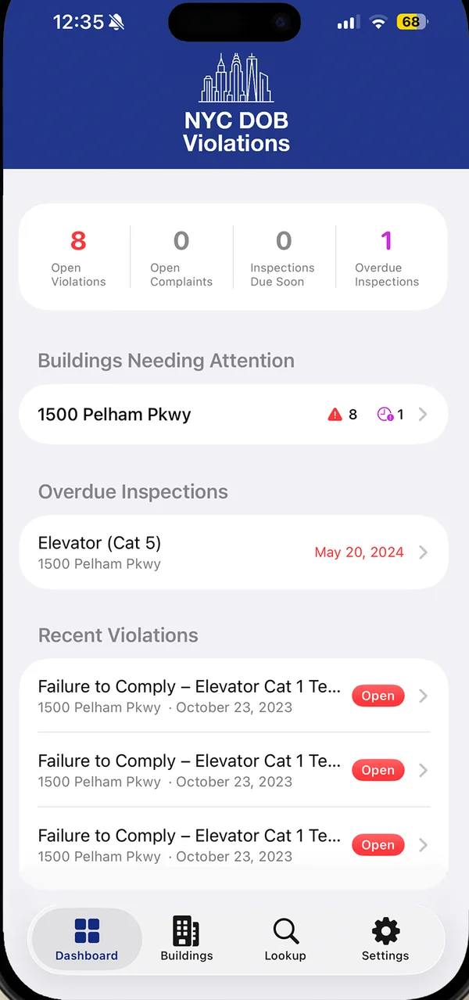

For NYC owners, managers and building professionals
Track NYC building violations and inspection deadlines
NYC DOB Violations is a free iPhone and iPad app that follows your buildings' DOB, ECB and HPD violations, complaints and inspection deadlines, and alerts you when something changes.

Next NYC building deadlines
Checked against city sources on .
| Deadline | Requirement | Applies to |
|---|---|---|
| December 1-31, 2026 | Bed bug annual report | Rental residential multiple dwellings |
| December 31, 2026 | Boiler inspections | Low-pressure and high-pressure boilers |
| December 31, 2026 | Elevator periodic and Category 1 | Elevators and other conveying systems |
| December 31, 2026 | Gas piping inspection | Community Districts 4, 6, 8, 9 and 16 |
| December 31, 2026 | Retaining wall report | Staten Island |
| December 31, 2026 | Energy audit report (LL87) | Covered buildings on a tax block ending in 6 |
| January 15, 2027 | Drinking water tank report | Tanks inspected in 2026 |
What the app tracks
- Violations
- Open and closed DOB, DOB Safety, DOB ECB and HPD violations, with severity, dates and descriptions.
- Complaints
- DOB and HPD complaints, with categories, inspection dates and resolution status.
- Inspection deadlines
- Due dates for elevators, boilers, cooling towers, facades, drinking water tanks and more.
- Alerts
- Notifications for new violations and complaints, and when deadlines are approaching.
- Portfolios
- Organize buildings into portfolios and see what needs attention on one dashboard.
- Records
- Attach photos and PDFs to any record, and keep a status history with comments.
NYC compliance guides
Plain-language guides to each requirement, with the deadline first and a link to every official source.
- NYC building compliance deadlines
- NYC backflow, sprinkler and standpipe testing
- NYC bed bug annual report
- NYC boiler inspection deadlines
- NYC cooling tower annual certification
- NYC drinking water tank inspection
- NYC elevator inspection deadlines
- NYC energy law deadlines
- FISP Cycle 10 facade inspection deadlines
- Local Law 152 gas piping inspection schedule
- How to check NYC DOB violations by address
- NYC parking structure inspection deadlines
- NYC retaining wall inspection deadlines
Frequently asked questions
Is the NYC DOB Violations app free?
Yes. It is free on the App Store, and it does not require an account.
Is this an official NYC Department of Buildings app?
No. It is an independent app. It is not affiliated with or endorsed by the NYC Department of Buildings or the City of New York. It reads public records from NYC Open Data.
Where does the data come from?
From public NYC Open Data sets published by the Department of Buildings and the Department of Housing Preservation and Development. Your building list stays on your device.
What devices does it run on?
iPhone and iPad running iOS 17 or later.